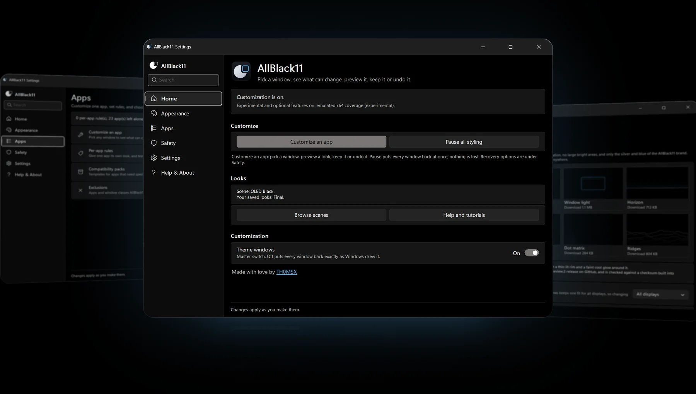
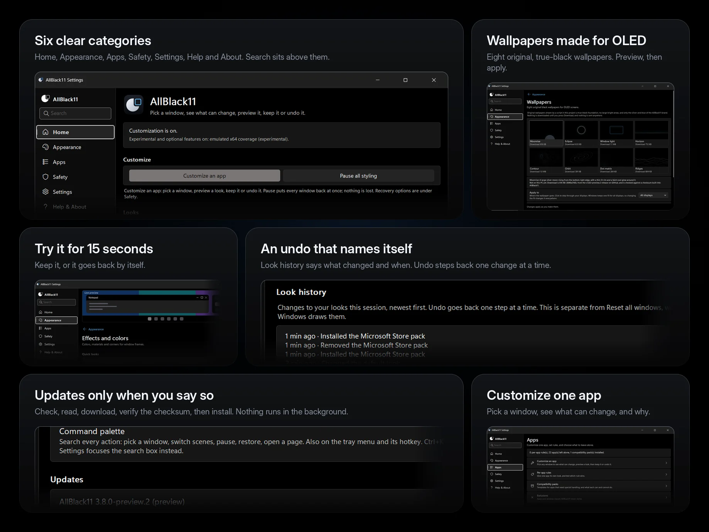
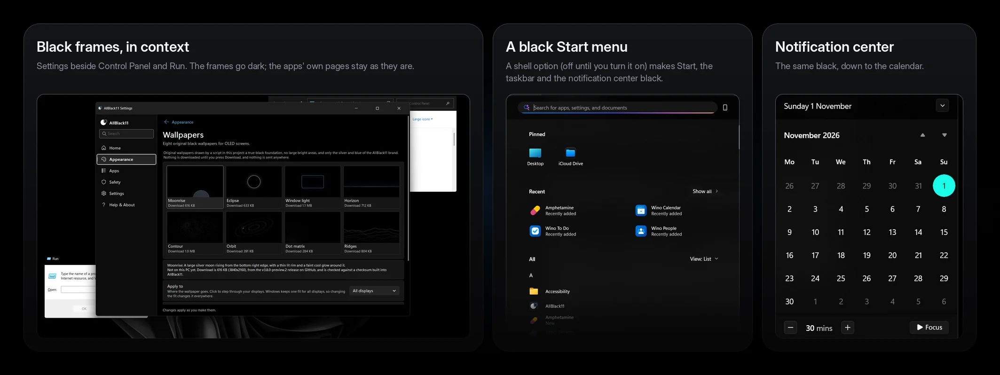

3.8 Preview · free · open source · MIT
Make Windows 11 truly black.
Windows dark mode still paints gray title bars, a gray taskbar and a tinted Start menu. AllBlack11 asks Windows for black ones, lets you try any look for 15 seconds, and puts everything back whenever you say so.
- Native ARM64 + x64
- No administrator rights
- No ads, no telemetry
- Every change undoable

A small tray app for a very black Windows
It styles window frames and the shell through the settings Windows itself provides. It is not a theme engine and it does not touch other programs' code by default.
Black title bars, borders, taskbar, Start menu and notification center, plus eight original OLED wallpapers.
Native ARM64 and x64. About 12 MB of RAM on a Snapdragon ZenBook (measured on 3.0 Preview), near-idle CPU, no timer while the PC is idle.
Every change is snapshotted and undone from the same place, with Undo, or by uninstalling.
What you get
Screenshots are 3.8 Preview on a Snapdragon (ARM64) Windows 11 PC. The arrangement, rounding and lighting are mockup styling; the windows themselves are not altered.

Settings that work like Windows Settings
Six categories, a landscape layout, a Back link on every page and a search box (Ctrl+K) that finds settings, scenes, packs, wallpapers and help. A result opens the page and marks the control; it never changes anything by itself.
Per-window looks
Dark caption, border, text color, corners and a backdrop (Mica, Mica Alt, Acrylic or tinted acrylic). Presets: Pure OLED, Accent glass, Classic Mica, Factory defaults.
Try before you keep
Every look runs as a 15-second trial. Press Keep, or wait and it goes back by itself.
Scenes and a Look Book
OLED Black, Graphite, Midnight Accent, Focus, Living Room, and looks you save. A palette from a picture, recipes you can import and export, and a remixer that refuses unreadable text.
Customize one app
Pick any window, see what can change and why, preview it for 20 seconds, then save it as a rule or leave it alone. Rules explain which one won and why.
Eight OLED wallpapers
Original, generated by a script in the repository, downloaded one at a time only when you press Download, and checked against a built-in checksum.
An updater that only tells you
Check, read the notes, download, verify the SHA-256, then choose Install. It never installs by itself, and there is no telemetry.
Safe to experiment
Look history with Undo, Pause, Reset all windows, a last-known-good config, and safe start after repeated crashes.
The shell
An OLED taskbar and an optional black Start menu and notification center, with a Restart Explorer button for when Windows needs a nudge. Off until you turn it on.
Windows, in context
The desktop, the Start menu and the notification center on the author's PC, cropped to the windows only.

Download
Recommended: 3.8 Preview. It replaces every older version and keeps your settings. Setup installs for your account only, with no administrator prompt. The binaries are unsigned, so SmartScreen may warn.
- Run Setup. If SmartScreen objects, choose More info, then Run anyway.
- Open Settings from the tray icon, pick a Quick look under Appearance, and watch the preview.
- Press Keep, or wait 15 seconds and it goes back by itself.
Older versions, checksums and release notes are on the releases page. Uninstall from Settings > Apps; it puts the Windows settings it changed back first.
How far it has been checked
3.8 Preview is a pre-release. The ARM64 build runs on its author's Windows 11 ARM64 PC. The x64 build is built and unit-tested on a real Windows x64 runner but has not been run on an x64 PC. Screen readers, the updater against real releases and wallpaper apply have not been tried on hardware.
| Area | Status |
|---|---|
| ARM64 build on Windows 11 ARM64 | Run by the author. The Settings shell, hub pages, Effects, Safety with Look history, Settings with Updates and the Wallpapers page were seen working. |
| x64 build | Built and unit-tested on a Windows x64 CI runner. Not run on an x64 PC. |
| Unit tests | 367, on Linux and on both native Windows CI runners. |
| Updater, wallpaper download and apply, Store and Calculator | Not yet checked on hardware. Store and Calculator showed no visible change on the author's PC, so those two packs are labeled experimental. |
| Screen readers | Unverified. Names and roles are in place and self-tested, not heard. |
Feature by feature, what was run and what was only built is in the evidence table; the hardware checklist is the smoke test.
Kept up to date, in the open
AllBlack11 received over 15 updates in November 2026 alone (every one is a commit you can read). The aim is at least one update every month, each with bug fixes, compatibility tweaks for Windows updates and new features. That is a target, not a promise, and every release says plainly what has and has not been checked.
Safety, and what it cannot do
Everything is per-user. No administrator rights. The default path does not inject code into other programs: window events are out-of-context, and frames are messages to the Windows compositor.
| Layer | What it does | Reaches into other apps? |
|---|---|---|
| A. Frame styling | Title bar, text and border colors, corners and backdrops, set through Windows' own window-frame attributes. | No |
| B. Legacy layer (opt-in, off by default) | Recolors the controls of classic dialogs (Run, old installers, property pages) from inside the app. | Yes, per dialog, only same-CPU and non-elevated, never games or the shell |
| C. App integrations | None ship yet. The Microsoft Store and Calculator packs are experiments. | No |
Not recolored
Apps that draw their own title bar (Chrome and many Electron apps), borderless full-screen games, and the insides of Store, Calculator and Settings pages. Those apps paint their own content; use the app's own theme option or Windows' app mode for that.
Backed out, always
Frame changes are remembered and put back on Exit, Disable or Reset. Shell changes are backed up and restored when you uncheck them or uninstall. High contrast pauses frame theming.
FAQ
Does it need an administrator account?
No. The program runs as the current user and its registry writes are per-user.
SmartScreen blocked it.
The binaries are unsigned. Choose More info, then Run anyway. You can also check the SHA-256 shown on the release page.
Chrome is unchanged.
Chrome draws its own title bar. AllBlack11 only changes frames that Windows itself paints.
The Store or Calculator did not change.
Expected. Those windows are hosted by Windows' app frame and draw their own pages. The experimental packs ask only for frame colors that are close to the default look. For page colors, use the app's own theme option or Windows' app mode (Settings > Personalization > Colors).
How do updates work?
Settings > Updates asks GitHub, only when you press Check (or once a day if you turn that on), whether a newer release exists. It never installs by itself: you read what is new, download, the checksum is verified, then you choose Install.
The Start menu went black, then Windows put the color back.
Changing the accent in Settings rebuilds Windows' palette. While Black Start, taskbar & notification center is on, AllBlack11 watches for that and sets the three slots back to black.
Where did PepaTheme go?
Same program, new name. The first launch copies the old config and snapshots when the new ones are missing.
More answers, the configuration reference and the source are in the README.
Free, and staying free
AllBlack11 is MIT-licensed, with no locked features, no ads and no telemetry. If it saves you time and you want to say thanks, a tip through PayPal is welcome. It is never required. Bug reports, screenshots and test results from your own PC help just as much: open an issue.